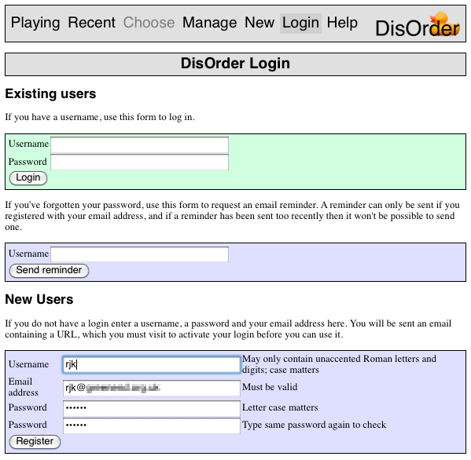
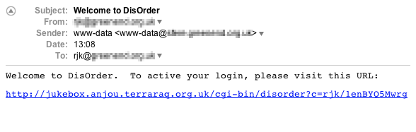
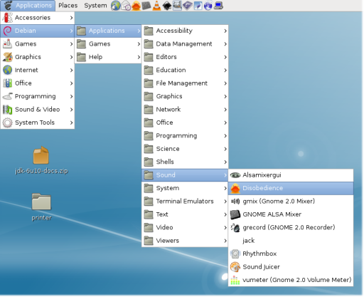
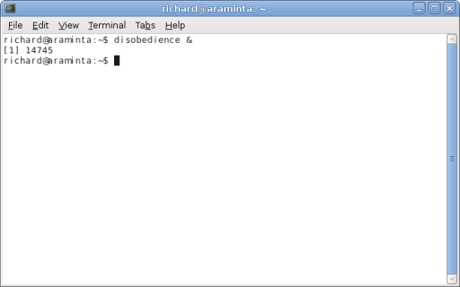
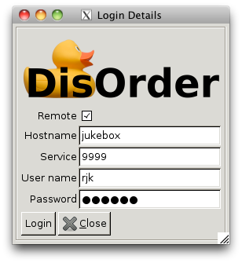

This chapter covers the following topics:
DisOrder is a multi-user software jukebox. It allows MP3s, OGGs, etc to be played either using a single sound card or over a network to many different computers, with multiple different people controlling what is played.
DisOrder has three main user interfaces.
This manual is about Disobedience, so it does not really cover installation or management issues. However in this chapter it will cover a few such topics as they are necessary to getting up and running with Disobedience.
There are two ways to get DisOrder.
If you have a Debian system you can download the .deb files from DisOrder's home page and install those. There are four packages to choose from:
(At the time of writing, DisOrder is not included as part of Debian.)
If you have another kind of Linux system, or a Mac, you must build from source code. See the README file included in the source distribution for more details. Note that to use Disobedience on a Mac, you will need X11.app.
There is no Windows support (although the web interface can be used from Windows computers).
The easiest way to get a DisOrder login is to access the web interface and set one up using that. To do this, visit http://HOSTNAME/cgi-bin/disorder, where HOSTNAME is the name of the server where DisOrder is installed. You should then be able to select the Login option at the top of the screen.

Go to the New Users form and enter the username you want to use, your email address, and a password. The password must be entered twice to verify you did not mistype it (since it won't be displayed on the screen). When you press Register, you will be sent an email requiring you to confirm your registration.

Your login won't be active until you click on this URL.
(It might be that your installation isn't set up to allow automatic registration. In that case the local sysadmin will have to create your login and set your initial password by hand.)
Having done this you could of course just use the web interface. But since this is the manual for Disobedience, it is assumed that you want to take advantage of its more convenient design and extra features.
On Debian systems it should be possible to find Disobedience in the menu system:

On other systems you will have to start it from the command line by typing its name at a command prompt. You can (optionally) use an & suffix to stop it tying up your terminal.

(Please note that Disobedience shouldn't write any messages to the terminal. If it does that probably indicates a bug, which should be reported.)
The first time you run Disobedience it won't know what server to connect to, your username or your password, and will therefore display a login box.

If Disobedience is running on a different computer to the server, then you should make sure the Remote box is ticked and fill in the host name (or IP address) and port number (“Service”). If you don't know what values to use here, ask your local sysadmin. If, on the other hand, Disobedience is running on the same computer as the server then you can leave the Remote box clear and it should be able to connect to it without using the network.
In any case, you will need to enter your username and password, as set up earlier.
Once you have logged in successfuly, Disobedience will remember these login settings, so it should not be necessary to enter them again. If you need to change them for any reason, you can either select the Server > Login option to bring the login window back, or (if you prefer), edit the file ~/.disorder/passwd directly.